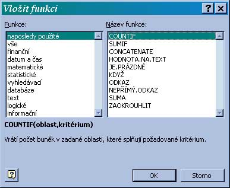

|  obr.3 |  obr.4 |
- Zadávanie oblastí vo funkcii
- samotná bunka ... SUM(C7)
- jedna oblas ... SUM(B3:D5)
- oblasti oddelené bodkoèiarkou ... SUM(C7;B3:D5)
|
|
- Vıpoèet platu spolu bez funkcie - =B2+B3+B4+B5+B6 Tento spôsob je pouitelnı pre menší poèet argumentov, tie kadé pridanie-ubratie riadku nás núti meni vzorec, èo je nepraktické.
- Vıpoèet platu spolu s funkciou SUM
- nastavíme kurzor do políèka B7
- stlaèíme tlaèítko SUM
- Excel sa pokúsi oznaèi blok, ktorı chceme spoèíta
- ak s jeho návrhom súhlasíme stlaèíme Enter
- ak chceme sèítaè inı blok oznaèíme ho manuálne - Teraz si pozrieme vısledok - v bunke bude zapísane =SUM(B2:B7)
èo vlastne znamená SPOÈÍTAJ bunky od B2 po B7
- SUM(zoznam oblastí oddelenıch bodkoèiarkou)
-
Spoèíta všetky bunky všetkıch zadanıch oblastí, ak sú tam bunky textové nevadí, berie ich ako 0.
Príklad SUM(a1;B2:C10) - Average(zoznam oblastí oddelenıch bodkoèiarkou)
- Spoèíta všetky bunky všetkıch zadanıch oblastí a vydelí poètom èíselnıch buniek v rozsahu.
Príklad Average(a1;B2:C10) - Max(zoznam oblastí oddelenıch bodkoèiarkou)
- Nájde maximálnu èíselnú hodnotu zo všetkıch vymenovanıch oblastí.
Príklad MAX(a1;B2:C3) ... nájde maximum z A1,B2,B3,C2,C3 - Min(zoznam oblastí oddelenıch bodkoèiarkou)
- Nájde minimálnu èíselnú hodnotu zo všetkıch vymenovanıch oblastí.
Príklad MIN(a1;B2:C3) ... nájde minimum z A1,B2,B3,C2,C3 - SUMIF(oblas podmienok; podmienka; oblas sèitovania)
- oblas podmienok - oblas kde sa kontroluje podmienka
podmienka - buï hodnota, alebo testovacia otazka ako text v úvodzovkách
oblas súètu - oblas ktorá vytvára súèet
Je vlastne cyklus, kde beia ukazovatele na oboch oblastiach, ak prvá hodnota vyhovuje podmienke, druhá hodnota je pridaná do súètu. Je odporúèané voli obe oblasti rovnako poèetné.
Príklad
obr. 5A B C D 1 1 15 =sumif(a1:a5,1,b1:b5) 2 2 10 3 1 2 4 3 5 5 1 3 V bunke D1 bude hodnota 20 získaná súètom 15+2+3
- COUNTIF(oblast; podmienka)
- Podmienka: najjednoduhšia je iba uvedená hodnota, napr. 5, Jano, Pravda
môe by aj vıraz napr. E15 - nepíšeme rovná sa pred
okrem rovnosti môeme tvori podmienky pomocou relaènıch operátorov >,< >= <= <>, ale potom musí by podmienka ako textovı vıraz. Spoèíta poèet buniek v zadanej oblastí, ktoré spåòajú danú podmienku.
Príklad COUNTIF(B2:C10;1) ... spoèíta poèet 1 v oblasti B2:C10
COUNTIF(B2:C10;"<0") spoèíta poèet zápornıch èísel - COUNTBLANK(zoznam oblastí oddelenıch bodkoèiarkou)
- Zistí poèet prázdnych buniek vo vıbere
Príklad COUNTBLANK(a1;B2:C3) ... zistí poèet prázdnych buniek z A1,B2,B3,C2,C3 - ROUND(vıraz; poèet des.)
- vyhodnotí danı vıraz a zaokrúhli ho pod¾a matematickıch pravidiel na danı poèet des. miest.
Príklad: Round(3,2, 0) -> 3
Round(3,226; 2) -> 3,23 - ROUNDDOWN(vıraz; poèet des.)
- vyhodnotí danı vıraz a zaokrúhli ho nadol (smerom k nule)na danı poèet des. miest.
Príklad: RoundDown(3,6;0) -> 3
RoundDown(3,226; 2) -> 3.22
RoundDown(-3,6; 0) -> -3.0 - ROUNDUP(vıraz; poèet des.)
- vyhodnotí danı vıraz a zaokrúhli ho nahor (smerom od nuly)na danı poèet des. miest.
Príklad: RoundUP(3,6;0) -> 4
RoundUp(3,226; 2) -> 3.23
RoundUp(-3,6; 0) -> -4.0 - ABS(vıraz), SIN(vıraz), COS(vıraz), TG(vıraz), EXP(vıraz),LN(vıraz),LOG(vıraz),PI()
- štandartné matematické funkcie, pri goniometrickıch funkciách je argument samozrejme v radiánoch.
- SUBTOTAL(èíslo_fun; oblas)
- Táto funkcia dokáe zastúpi viacero u spomenutıch funkcií ale pre svoju pomernú zloitos sa pouíva len v spojitosti
s filtrovaním. Jej uplatnenie je v tom, e do vısledku neberie riadky, ktoré nevyhovujú podmienke nastaveného filtra (pozri filtrovanie).
Napr. hodnota funkcie SUM sa nezmení aj keï nastavením filtra sa sa zníi poèet riadkov vıberu, ale hodnota
funkcie SUBTOTAL(9;...) sa bude meni pod¾a zvoleného filtra. Funkcia má dva parametre:
1. urèuje èinnos funkcie
2. urèuje oblasÈíslo funkce Funkcia 1 AVERAGE 2 COUNT 3 COUNTa 4 MAX 5 MIN 6 PRODUKT 7 STDEV 8 STDEVP 9 SUM 10 VAR 11 VARP

|
|
- IF(podmienka;ano;nie)
-
Pouíva sa ak obsah bunky sa má úplne meni pod¾a nejakej podmienky.
Vyhodnotí podmienku a ak je podmienka pravdivá vyhodnotí a zobrazí vıraz ano inak vyhodnotí a zobrazí vıraz nie
Príklad: IF(c5>0;"kladné",if(c5<0;"záporné";"nulové")) - AND(zoznam log. vırazov oddelenıch bodkoèiarkou)
-
vyhodnotí log. vırazy a urobí medzi nimi operáciu and
Vısledkom je vıslednı logickı vıraz. Pouíva sa na tvorbu zloenıch podmienok.
Príklad: IF(AND(c5>0,c5"),"vyhovuje","nevyhovuje") - OR(zoznam log. vırazov oddelenıch bodkoèiarkou)
-
vyhodnotí log. vırazy a urobí medzi nimi operáciu or
Vısledkom je vıslednı logickı vıraz. Pouíva sa na tvorbu zloenıch podmienok.
Príklad: IF(OR(c5>0;c6>0),"aspon jedno kladné","ani jedno kladné") - NOT(logickı vıraz)
-
vyhodnotí log. vırazy a urobí jeho negáciu
Vısledkom je vıslednı logickı vıraz. Pouíva sa na tvorbu zloenıch podmienok.
Príklad: IF(NOT(c5>0),"nekladné","kladné")

|
|
- DATEVALUE(text), DATE(cislo_den, cislo_mes, cislo_rok)
-
prevedie text (resp. 3 èísla) na dátum. Pouíva sa ak je dátum zapísanı roztrhnuto (den, mes, rok v samostatnıch ståpcoch)
a potrebujeme vykona nejaké dátumové príkazy (zisti rozdiel dní, deò v tıdni a pod)
Príklad: DATEVALUE("25.03.2004")-DATEVALUE(11.09.2002) ... zistí poèet dní medzi dátumami - DEN(datumovı_vıraz)
-
Z dátumu vie vytiahnu deò.
Príklad: DAY(DATEVALUE("25.03.2004")) -> 25 - MONTH(dátumovı_vıraz)
-
Z dátumu vie vytiahnu èíslo mesiaca.
Príklad: MONTH(DATEVALUE("25.03.2004")) -> 3 - YEAR(dátumovı_vıraz)
-
Z dátumu vie vytiahnu èíslo mesiaca.
Príklad: YEAR(DATEVALUE("25.03.2004")) -> 2004 - WEEKDAY(dátumovı_vıraz;2) alebo WEEKDAY(text;2)
-
Z dátumu vie vytiahnu èíslo poradové èíslo dòa v tıdni 1=pondelok, ....
Príklad: WEEKDAY(DATEVALUE("25.03.2004")) -> 6 - TODAY()
-
Hodnotou je dnešnı dátum ako dátumová hodnota
Príklad: TODAY() -> vypíše napr. 27.03.2004 - NOW()
-
Hodnotou je dnešnı dátum a aktuálny èas
Príklad: NOW() -> vypíše napr. 27.03.2004 10:08 - TIMEVALUE(text), ÈAS(cislo_hod, cislo_min, cislo_sek)
- prevedie text (resp. 3 èísla) na èasovı údaj.
- HOUR(èasovı_vıraz)
-
Z èasového údaja vie vytiahnu hodinu.
Príklad: HOUR(NOW()) -> 10 - MINUTE(èasovı_vıraz)
-
Z èasového údaja vie vytiahnu minutu.
Príklad: MINUTE(NOW()) -> 8 - SECOND(èasovı_vıraz)
-
Z èasového údaja vie vytiahnu sekundu.
Príklad: SECOND(NOW()) -> 15
Èasto sa stane e namiesto niektorého argumenta funkcie potrebujeme vloi vısledok nejakej funkcie (jedna funkcia bude vnútri inej). Pokia¾ vnorenú funkciu vieme korektne zapísa nie je problém:
- Zaèneme vytváraním vonkajšej funkcie
- Do riadka pre parameter naklepeme funkciu (tu sa musíme spo¾ahnú na svoju pamä a napísa ju správne)
(napríklad vo funkcii IF() do riadka pre podmienku naklepeme OR(a1>0; A2>0)
Pokia¾ si vnorenú funkciu netrúfame korektne zapísa sami a chceme zavola "pomocníka"="dialogóvé okno" pouijeme nasledovnı postup:
- Zaèneme vytváraním vonkajšej funkcie (napr. funkcia IF)
- nastavíme sa do riadku parameter
- rozbalíme ponuku "adresné pole" a vyberieme funkciu (napr. OR), ak tam nie je zvolíme "ïalšie funkcie"
- po zvolení funkcie sa zavolá dialógové okno a my nastavujeme parametre vnútornej funkcie
- po zadaní parametrov stlaèíme "OK" okno sa zavrie a nami zadaná funkcia sa korektne zapíše na miesto parametra vonkajšej funkcie
Pozn.:
Funkcie mono do seba vnára do håbky 7.